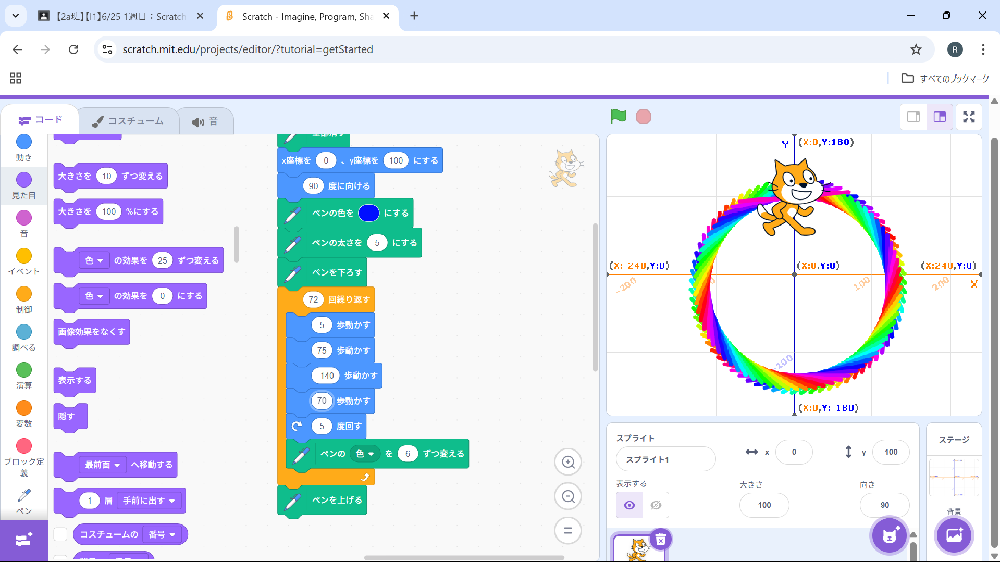
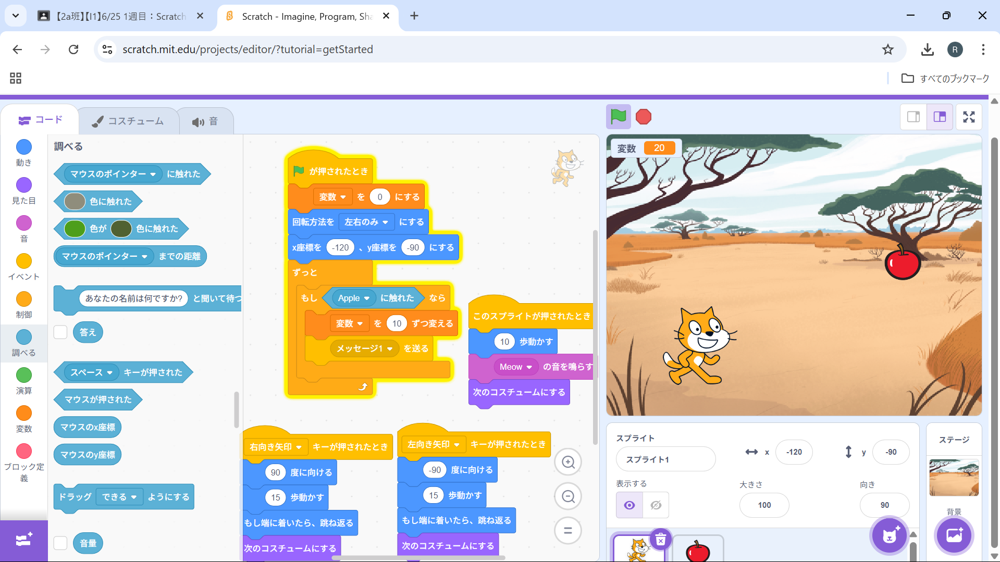

1週目のレポート ： 公大高専１年実習I-1
2a班21番 とよそう
第1週目
1-1 サイエンスアート

1.内容
スクラッチで猫を動かし、動いたところをペンで色を付けサイエンスアートを作成しました。
自分で色やプログラムを作り、カラフルやいろいろな図形を作成しました。
2.感想
もとになるプログラムの数値を変えると全然違う動作になったりして、なぜそうなるんだと思い興味深く感じました。
また、自分の創造した通りの動きをした時、達成感を得ることができました。
1-2 ゲーム

1.内容
スクラッチを使用し、猫を左右に動かすことでリンゴをキャッチしその数を数えるゲームを作成しました。
2.感想
スクラッチでは、モノの大きさを変えることや、背景を変えたりBGMを設定することができることがわかりました。
リンゴをワンパターンに落とすのではなく、落ちる速さや落ちる場所を変えることでゲーム性が生まれたのだと考えました。
1-3 ホームページ作成
私のホームページ
1.内容
GitHubというアプリを使用し、自分の自己紹介を書きホームページを作成しました。
画像をGitHubにアップロードする方法も学ぶことができました。
2.感想
自分の打ち込んだことがそのまま反映されとても興味深いと考えました。
また、プログラムの仕方次第では文字の色や背景も変えることができるのだろうと思いました。
各ページへのリンク
1週目のレポート
2週目のレポート
3週目のレポート
私のホームページ